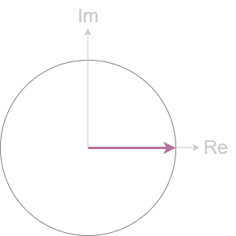
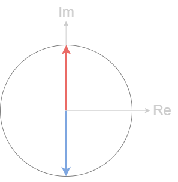
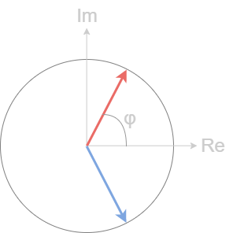

常见信号频谱记忆小妙招
余弦信号
余弦信号是傅里叶变换的基（余弦信号和复指数信号$e^{j\Omega t}$性质相同，或者说复指数信号是余弦信号在复频域的推广），它的频谱非常纯粹，只有正负频率上的两个冲激。
将这两个冲激函数画在复平面上。

当信号时延，正负频率脉冲向相反方向旋转相同相位角，$sin(\Omega_0t)$的频谱可以用$cos(\Omega_0t+\pi/2)$记忆。

任意相位的余弦信号$cos(\Omega_0t+\phi)$频谱也可以画出。

注意
- 辅助圆的半径是冲激信号的大小1/2。
- 该作图法只显示了冲激的大小和相位信息，没有频率。
- 也可以用实信号频域共轭偶对称来记忆两个脉冲的关系。
门函数/矩形窗函数
三个参数确定一个门函数，长度$T$，幅度$A$，中心位置$T_0$
知道中心位置在原点的门函数频谱，其它门函数频谱乘一个时延因子$e^{-j\Omega T_0}$即可。
还是需要记忆频谱是$Sa$函数。
中心在原点的门函数是（共轭）偶对称函数，所以其频谱是实的。
$\Omega \rightarrow 0,Sa \rightarrow 1$，频率为0的分量是时域的直流分量——图形下的面积$AT$。确定频谱的形式是$ATSa$。
根据对偶性，频谱是频率为$-T/2\sim T/2$的余弦信号平权线性叠加，最高的频率是$T/2$，$Sa$内以$T/2$作为频率。更好的记忆方法还没有想到。
 wechat
wechat
Related Articles
Comment